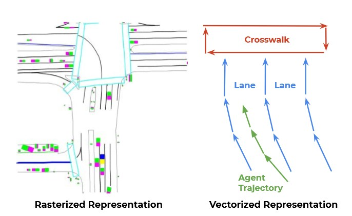
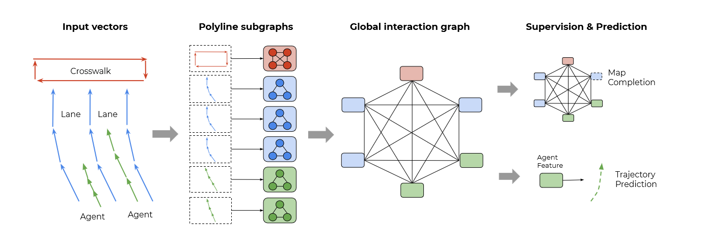
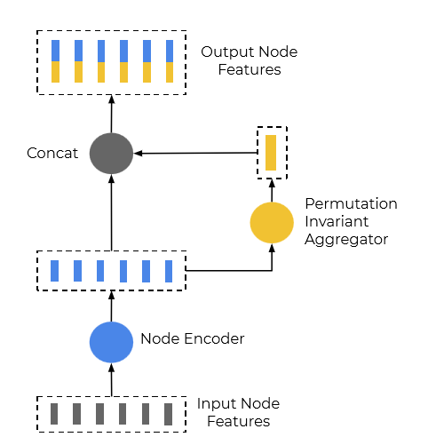
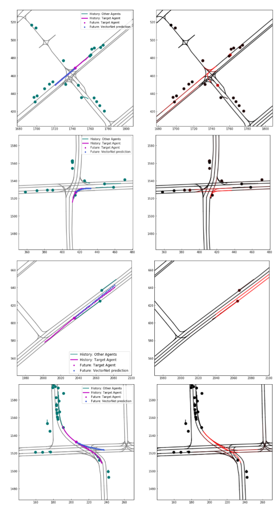

Jiyang Gao1*、Chen Sun2*、Hang Zhao1、Yi Shen1、Dragomir Anguelov1、Congcong Li1、Cordelia Schmid2
1Waymo LLC、2Google Research
{jiyanggao, hangz, yshen, dragomir, congcongli}@waymo.com、{chensun, cordelias}@google.com
arXiv:2005.04259v1 [cs.CV]、2020年5月8日
翻訳について：原文 PDF は
04_VectorNet_2005.04259.pdf（全 9 ページ）。本文、図の説明、図中ラベル、表、脚注、付録を訳出し、論文タイトルと参考文献は原文のまま掲載。図は原図を掲載し、英語ラベルの日本語訳を併記した。数式・数値・引用番号・コードの識別子は原文を維持。原文の記述に関する補足は「訳注」と明示し、本文と区別している。
脚注＊：同等の貢献。
動的なマルチエージェントシステムにおける行動予測は、自動運転車の文脈において重要な問題である。これは、移動するエージェント（例：歩行者や車両）や道路のコンテキスト情報（例：車線、信号機）を含む道路構成要素の表現と相互作用が複雑であるためである。本論文では VectorNet を提案する。VectorNet は階層型のグラフニューラルネットワークであり、まずベクトルで表現された個々の道路構成要素の空間的局所性を活用し、次にすべての構成要素間の高次の相互作用をモデル化する。移動エージェントの軌跡と道路コンテキスト情報を鳥瞰画像としてレンダリングし、畳み込みニューラルネットワーク（ConvNets）で符号化する最近の多くの手法とは対照的に、本手法はベクトル表現の上で動作する。ベクトル化された高精細（HD）マップとエージェント軌跡を直接扱うことで、情報の欠落を伴うレンダリングと計算負荷の高い ConvNet による符号化の工程を回避する。さらに、コンテキスト特徴を学習する VectorNet の能力を高めるため、ランダムにマスクされた地図要素とエージェント軌跡を、そのコンテキストに基づいて復元する新しい補助タスクを提案する。VectorNet を、社内の行動予測ベンチマークと最近公開された Argoverse 予測データセットで評価する。本手法は両ベンチマークにおいて、競争力のあるレンダリング手法と同等以上の性能を達成しつつ、モデルパラメータを 70% 以上削減し、FLOPs を 1 桁削減する。また、Argoverse データセットにおいて最先端（state of the art）の手法を上回る。

図1：高精細地図とエージェント軌跡を表現するための、ラスタ化レンダリング（左）とベクトル化手法（右）の説明図。
図中ラベル：Rasterized Representation＝ラスタ化表現、Vectorized Representation＝ベクトル化表現、Crosswalk＝横断歩道、Lane＝車線、Agent Trajectory＝エージェント軌跡
本論文は、自動運転車のような複雑なマルチエージェントシステムにおける行動予測に焦点を当てる。中心的な関心は、物体検出や追跡などの認識システムによって得られるエージェントのダイナミクスと、多くの場合高精細（HD）マップの形で事前知識として与えられるシーンコンテキストとを統合する、統一的な表現を見つけることである。我々の目標は、軌跡としてパラメータ化された車両の意図を予測することを学習するシステムを構築することである。
行動予測の従来手法はルールベースであり、道路地図から得られる制約に基づいて複数の行動仮説が生成される。より最近では、多くの学習ベースの手法が提案されている［5, 6, 10, 15］。これらは異なる行動仮説について確率的な解釈を与えるという利点を持つが、地図と軌跡の情報を符号化するための表現を構築する必要がある。興味深いことに、HD マップは高度に構造化されており、位置（例：車線）と属性（例：青信号）を持つ実体（エンティティ）として整理されているにもかかわらず、これらの手法の多くは HD マップを色分けされた属性としてレンダリングすること（図1左）を選んでおり、これには人手による仕様設計が必要である。さらに、シーンコンテキスト情報を受容野の限られた ConvNets で符号化している。ここから次の疑問が生じる。構造化された HD マップから直接、意味のあるコンテキスト表現を学習できないだろうか？
我々は、マルチエージェントのダイナミクスと構造化されたシーンコンテキストの統一的な表現を、それらのベクトル化された形式（図1右）から直接学習することを提案する。道路特徴の地理的な広がりは、地理座標における点、多角形、または曲線でありうる。例えば、車線境界はスプラインを構成する複数の制御点を含み、横断歩道は複数の点で定義される多角形であり、一時停止標識は単一の点で表される。これらの地理的実体はすべて、複数の制御点とその属性によって定義されるポリラインとして精密に近似できる。同様に、移動エージェントのダイナミクスも、その運動軌跡に基づいてポリラインで近似できる。そして、これらのポリラインはすべてベクトルの集合として表現できる。
我々はグラフニューラルネットワーク（GNN）を用いて、これらのベクトルの集合を取り込む。各ベクトルをグラフのノードとして扱い、ノード特徴を各ベクトルの始点位置と終点位置、およびポリラインのグループ ID や意味ラベルなどのその他の属性とする。HD マップからのコンテキスト情報は、他の移動エージェントの軌跡とともに、GNN を通じて対象エージェントのノードへと伝播される。その後、対象エージェントに対応する出力ノード特徴を取り出し、その将来の軌跡を復号できる。
具体的には、GNN で競争力のある表現を学習するには、ノードの空間的・意味的な近接性に基づいてグラフの接続性を制約することが重要であることを我々は見いだした。そこで、階層型のグラフアーキテクチャを提案する。このアーキテクチャでは、同じ意味ラベルを持つ同じポリラインに属するベクトル同士が接続されてポリライン特徴へと埋め込まれ、その後すべてのポリラインが互いに全結合されて情報を交換する。局所グラフは多層パーセプトロンで、大域グラフは自己注意［30］で実装する。本手法の概要を図2に示す。

図2：提案する VectorNet の概要。観測されたエージェント軌跡と地図特徴はベクトルの系列として表現され、局所グラフネットワークに渡されてポリラインレベルの特徴が得られる。これらの特徴は次に全結合グラフに渡され、高次の相互作用がモデル化される。我々は 2 種類の損失を計算する。移動エージェントに対応するノード特徴から将来の軌跡を予測する損失と、特徴がマスクされたときにそのノード特徴を予測する損失である。
図中ラベル：Input vectors＝入力ベクトル、Polyline subgraphs＝ポリライン部分グラフ、Global interaction graph＝大域相互作用グラフ、Supervision & Prediction＝教師信号と予測、Crosswalk＝横断歩道、Lane＝車線、Agent＝エージェント、Map Completion＝地図補完、Agent Feature＝エージェント特徴、Trajectory Prediction＝軌跡予測
最後に、系列的な言語データ［11］および視覚データ［27］からの自己教師あり学習の近年の成功に動機づけられ、行動予測の目的関数に加えて、補助的なグラフ補完の目的関数を提案する。より具体的には、シーンコンテキストまたはエージェント軌跡のいずれかに属する入力ノード特徴をランダムにマスクし、マスクされた特徴をモデルに再構成させる。その狙いは、グラフネットワークがエージェントのダイナミクスとシーンコンテキストの間の相互作用をよりよく捉えるよう促すことである。まとめると、本論文の貢献は次のとおりである。
自動運転のための行動予測。移動エージェントの行動予測は自動運転の応用においてますます重要になっており［7, 9, 19］、コンテキスト情報を提供するために高精度な地図が広く用いられてきた。例えば IntentNet［5］は、LiDAR 点群とレンダリングされた HD マップから、車両の検出とその軌跡の予測を同時に行うことを提案している。Hong et al.［15］は車両の検出結果が与えられることを仮定し、エンティティ間の相互作用を ConvNets で符号化することにより行動予測に焦点を当てている。同様に MultiPath［6］もエンコーダとして ConvNets を用いるが、事前に定義した軌跡アンカーを採用して、複数の可能な将来軌跡を回帰する。PRECOG［23］は、フローベースの生成モデルによって将来の確率的な性質を捉えようとしている。［6, 15, 23］と同様に、我々もエージェントの検出結果は既存の認識アルゴリズムによって与えられると仮定する。しかし、レンダリングされた道路地図を符号化するためにいずれも ConvNets を用いるこれらの手法とは異なり、我々はベクトル化されたシーンコンテキストとエージェントのダイナミクスを直接符号化することを提案する。
マルチエージェントの相互作用の予測。自動運転の領域を超えて、相互作用するエージェントの意図を予測することには、より一般的な関心が寄せられている。例えば、歩行者［2, 13, 24］、人間の活動［28］、スポーツ選手［12, 26, 32, 33］などが対象である。特に Social LSTM［2］は、個々のエージェントの軌跡を別々の LSTM ネットワークでモデル化し、エージェントの空間的近接性に基づいて LSTM の隠れ状態を集約することで、それらの相互作用をモデル化する。Social GAN［13］は相互作用モジュールを簡略化し、多様な将来を予測するための敵対的識別器を提案している。Sun et al.［26］はグラフネットワーク［4］と変分 RNN［8］を組み合わせて多様な相互作用をモデル化している。社会的な相互作用はデータから推論することもできる。Kipf et al.［18］はそのような相互作用を潜在変数として扱い、グラフ注意ネットワーク［16, 31］は自己注意機構を適用して、事前に定義されたグラフのエッジに重みを付ける。本手法はさらに一歩進み、複数エージェント間の相互作用と、それらと道路地図上のエンティティとの相互作用を同時にモデル化する、統一的な階層型グラフネットワークを提案する。
エンティティ集合の表現学習。伝統的に、機械知覚のアルゴリズムは画像、動画、音声といった高次元の連続信号に焦点を当ててきた。例外の一つは 3D 認識であり、その入力は通常、深度センサから得られる順序のない点集合の形をとる。例えば Qi et al. は PointNet モデル［20］と PointNet++［21］を提案し、学習された点の埋め込みに対して置換不変な演算（例：最大値プーリング）を適用している。点集合とは異なり、HD マップ上のエンティティやエージェント軌跡は閉じた形状をなすか、あるいは向きを持っており、属性情報が付随することもある。そこで我々は、入力をベクトル化することでそのような情報を保持し、属性をグラフのノード特徴として符号化することを提案する。
自己教師ありのコンテキストモデリング。近年、自然言語処理（NLP）の領域では、言語コンテキストを自己教師ありの方法でモデル化する多くの研究が提案されている［11, 22］。それらが学習した表現は、下流タスクに転移したときに大幅な性能向上を達成する。これらの手法に着想を得て、我々はグラフ表現のための補助損失を提案する。これは、欠落したノード特徴をその近傍から予測することを学習するものである。その目的は、ノード間の相互作用をよりよく捉えるようモデルを動機づけることである。
本節では VectorNet の手法を紹介する。まず、エージェント軌跡と HD マップをベクトル化する方法を説明する。次に、個々のポリラインから局所的な情報を集約し、その後すべての軌跡と地図特徴にわたって大域的に情報を集約する階層型グラフネットワークを示す。このグラフはその後、行動予測に用いることができる。
HD マップのアノテーションの大部分は、スプライン（例：車線）、閉じた形状（例：交差点の領域）、点（例：信号機）の形をとり、アノテーションの意味ラベルやその現在の状態（例：信号機の色、道路の制限速度）といった追加の属性情報を伴う。エージェントについては、その軌跡は時間に関して向きを持つスプラインの形をとる。これらの要素はすべてベクトルの系列として近似できる。地図特徴については、始点と方向を選び、スプラインから同じ空間距離でキーポイントを一様にサンプリングし、隣り合うキーポイントを順にベクトルとして接続する。軌跡については、\( t = 0 \) から開始して固定の時間間隔（0.1 秒）でキーポイントをサンプリングし、それらをベクトルとして接続すればよい。空間的または時間的な間隔が十分に小さければ、得られるポリラインは元の地図と軌跡の精密な近似となる。
我々のベクトル化処理は、連続的な軌跡および地図アノテーションとベクトル集合との間の 1 対 1 の写像である。ただし、後者（ベクトル集合）には順序がない。これにより、ベクトル集合の上にグラフ表現を構成でき、それをグラフニューラルネットワークで符号化できる。より具体的には、ポリライン \( \mathcal{P}_j \) に属する各ベクトル \( \mathbf{v}_i \) をグラフのノードとして扱い、そのノード特徴を次で与える。
\[ \mathbf{v}_i = \left[ \mathbf{d}_i^s, \mathbf{d}_i^e, \mathbf{a}_i, j \right], \tag{1} \]
ここで \( \mathbf{d}_i^s \) と \( \mathbf{d}_i^e \) はベクトルの始点と終点の座標であり、\( \mathbf{d} \) 自体は 2D 座標なら \( (x, y) \)、3D 座標なら \( (x, y, z) \) として表せる。\( \mathbf{a}_i \) は属性特徴に対応し、例えば物体の種類、軌跡のタイムスタンプ、あるいは車線の道路特徴の種類や制限速度などである。\( j \) は \( \mathcal{P}_j \) の整数 ID であり、\( \mathbf{v}_i \in \mathcal{P}_j \) であることを示す。
入力ノード特徴を対象エージェントの位置に対して不変にするため、すべてのベクトルの座標を、最後に観測された時刻ステップにおける対象エージェントの位置を中心とするように正規化する。今後の課題は、相互作用するすべてのエージェントで座標の中心を共有し、それらの軌跡を並列に予測できるようにすることである。
ノードの空間的・意味的な局所性を活用するため、階層的なアプローチをとる。まずベクトルレベルで部分グラフを構築し、同じポリラインに属するすべてのベクトルノードを互いに接続する。ノード \( \{\mathbf{v}_1, \mathbf{v}_2, ..., \mathbf{v}_P\} \) を持つポリライン \( \mathcal{P} \) を考え、部分グラフの伝播演算の 1 層を次のように定義する。
\[ \mathbf{v}_i^{(l+1)} = \varphi_{\text{rel}} \left( g_{\text{enc}}(\mathbf{v}_i^{(l)}), \varphi_{\text{agg}} \left( \left\{ g_{\text{enc}}(\mathbf{v}_j^{(l)}) \right\} \right) \right) \tag{2} \]

図3：同じポリラインのベクトルノードにおける計算の流れ。
図中ラベル：Input Node Features＝入力ノード特徴、Node Encoder＝ノードエンコーダ、Permutation Invariant Aggregator＝置換不変な集約器、Concat＝連結、Output Node Features＝出力ノード特徴
ここで \( \mathbf{v}_i^{(l)} \) は部分グラフネットワークの第 \( l \) 層のノード特徴であり、\( \mathbf{v}_i^{(0)} \) は入力特徴 \( \mathbf{v}_i \) である。関数 \( g_{\text{enc}}(\cdot) \) は個々のノード特徴を変換し、\( \varphi_{\text{agg}}(\cdot) \) はすべての近傍ノードからの情報を集約し、\( \varphi_{\text{rel}}(\cdot) \) はノード \( \mathbf{v}_i \) とその近傍との間の関係演算子である。
実際には、\( g_{\text{enc}}(\cdot) \) は重みがすべてのノードで共有される多層パーセプトロン（MLP）である。具体的には、この MLP は 1 層の全結合層と、それに続く層正規化（layer normalization）［3］、そして ReLU 非線形関数からなる。\( \varphi_{\text{agg}}(\cdot) \) は最大値プーリング演算であり、\( \varphi_{\text{rel}}(\cdot) \) は単純な連結である。図3に説明図を示す。部分グラフネットワークを複数層積み重ね、各層の \( g_{\text{enc}}(\cdot) \) の重みは異なるものとする。最後に、ポリラインレベルの特徴を得るために次を計算する。
\[ \mathbf{p} = \varphi_{\text{agg}} \left( \left\{ \mathbf{v}_i^{(L_p)} \right\} \right) \tag{3} \]
ここで \( \varphi_{\text{agg}}(\cdot) \) は再び最大値プーリングである。
我々のポリライン部分グラフネットワークは PointNet［20］の一般化とみなせる。\( \mathbf{d}^s = \mathbf{d}^e \) とし、\( \mathbf{a} \) と \( \mathbf{l} \) を空にすると、我々のネットワークは PointNet と同じ入力と計算の流れを持つ（訳注：式(1)の記号に照らすと \( \mathbf{l} \) はポリライン ID の \( j \) を指すと思われる）。しかし、順序の情報をベクトルに埋め込み、ポリラインのグループ分けに基づいて部分グラフの接続性を制約し、属性をノード特徴として符号化することにより、本手法は構造化された地図アノテーションとエージェント軌跡の符号化に特に適している。
次に、ポリラインのノード特徴 \( \{\mathbf{p}_1, \mathbf{p}_2, ..., \mathbf{p}_P\} \) 上の高次の相互作用を、大域相互作用グラフによってモデル化することを考える。
\[ \left\{ \mathbf{p}_i^{(l+1)} \right\} = \text{GNN} \left( \left\{ \mathbf{p}_i^{(l)} \right\}, \mathcal{A} \right) \tag{4} \]
ここで \( \{\mathbf{p}_i^{(l)}\} \) はポリラインのノード特徴の集合、\( \text{GNN}(\cdot) \) はグラフニューラルネットワークの 1 層に対応し、\( \mathcal{A} \) はポリラインノードの集合に対する隣接行列に対応する。
隣接行列 \( \mathcal{A} \) には、ノード間の空間距離［2］を用いるなどのヒューリスティックを与えることができる。簡単のため、\( \mathcal{A} \) は全結合グラフであると仮定する。我々のグラフネットワークは自己注意演算［30］として実装される。
\[ \text{GNN}(\mathbf{P}) = \text{softmax} \left( \mathbf{P}_Q \mathbf{P}_K^T \right) \mathbf{P}_V \tag{5} \]
ここで \( \mathbf{P} \) はノード特徴行列であり、\( \mathbf{P}_Q \)、\( \mathbf{P}_K \)、\( \mathbf{P}_V \) はその線形射影である。
次に、移動エージェントに対応するノードから将来の軌跡を復号する。
\[ \mathbf{v}_i^{\text{future}} = \varphi_{\text{traj}} \left( \mathbf{p}_i^{(L_t)} \right) \tag{6} \]
ここで \( L_t \) は GNN の総層数であり、\( \varphi_{\text{traj}}(\cdot) \) は軌跡デコーダである。簡単のため、デコーダ関数には MLP を用いる。MultiPath［6］のアンカーベースの手法や変分 RNN［8, 26］のような、より高度なデコーダを用いて多様な軌跡を生成することもできる。これらのデコーダは我々の入力エンコーダと相補的である。
我々の実装では GNN を 1 層だけ用いるため、推論時には対象エージェントに対応するノード特徴だけを計算すればよい。ただし、必要に応じて \( \text{GNN}(\cdot) \) を複数層積み重ね、より高次の相互作用をモデル化することもできる。
大域相互作用グラフが異なる軌跡と地図ポリラインの間の相互作用をよりよく捉えるよう促すため、補助的なグラフ補完タスクを導入する。訓練時には、ポリラインノードの一部集合（例：\( \mathbf{p}_i \)）の特徴をランダムにマスクする。そして、マスクされた特徴を次のように復元することを試みる。
\[ \hat{\mathbf{p}}_i = \varphi_{\text{node}} \left( \mathbf{p}_i^{(L_t)} \right) \tag{7} \]
ここで \( \varphi_{\text{node}}(\cdot) \) は MLP として実装されたノード特徴デコーダである。これらのノード特徴デコーダは推論時には用いない。
\( \mathbf{p}_i \) は全結合で順序のないグラフのノードであることを思い出してほしい。対応する特徴がマスクされたときに個々のポリラインノードを識別するため、そのポリラインに属するすべてのベクトルの始点座標の最小値を計算して、識別子埋め込み \( \mathbf{p}_i^{\text{id}} \) を得る。このとき入力ノード特徴は次のようになる。
\[ \mathbf{p}_i^{(0)} = \left[ \mathbf{p}_i ; \mathbf{p}_i^{\text{id}} \right] \tag{8} \]
我々のグラフ補完の目的関数は、自然言語処理で広く成功を収めている BERT［11］の手法と密接に関連している。BERT は、離散的で系列的なテキストデータから、双方向のコンテキストに基づいて欠落したトークンを予測する。我々はこの訓練目的関数を、順序のないグラフで機能するように一般化する。事前に計算された視覚特徴を持つ順序のない画像パッチへと BERT の目的関数を一般化したいくつかの最近の手法（例：［25］）とは異なり、我々のノード特徴はエンドツーエンドの枠組みで同時に最適化される。
階層型グラフネットワークを構築したら、次のマルチタスクの訓練目的関数を最適化する。
\[ \mathcal{L} = \mathcal{L}_{\text{traj}} + \alpha \mathcal{L}_{\text{node}} \tag{9} \]
ここで \( \mathcal{L}_{\text{traj}} \) は正解の将来軌跡に対するガウス負の対数尤度、\( \mathcal{L}_{\text{node}} \) は予測されたノード特徴と正解のマスクされたノード特徴との間の Huber 損失であり、\( \alpha = 1.0 \) は 2 つの損失項のバランスをとるスカラーである。ノード特徴の大きさを小さくすることで \( \mathcal{L}_{\text{node}} \) が自明な解に陥るのを避けるため、ポリラインのノード特徴を大域グラフネットワークに入力する前に L2 正規化する。
予測軌跡は、最後に観測された位置から始まる、ステップごとの座標オフセットとしてパラメータ化される。座標系は、最後に観測された位置における対象車両の向き（ヘディング）に基づいて回転させる。
本節では、まずデータセット、評価指標、ラスタ化＋ConvNets のベースラインを含む実験設定を説明する。次に、ラスタ化ベースラインと VectorNet の両方について包括的なアブレーション研究を行う。第三に、FLOPs とパラメータ数を含む計算コストを比較・議論する。最後に、最先端の手法と性能を比較する。
2 つの車両行動予測ベンチマーク、すなわち最近公開された Argoverse データセット［7］と社内の行動予測データセットでの結果を報告する。
Argoverse motion forecasting［7］は、軌跡の履歴を用いた車両行動予測のために設計されたデータセットである。5 秒長の系列が 333K 個あり、211K 個の訓練系列、41K 個の検証系列、80K 個のテスト系列に分割されている。作成者は、合流車両への譲り、交差点の横断など、興味深く多様なシナリオを抽出してこのデータセットを構築した。軌跡は 10Hz でサンプリングされており、(0, 2] 秒が観測に、(2, 5] 秒が軌跡予測に用いられる。各系列には、軌跡が予測対象となる「興味深い」エージェントが 1 体含まれる。車両の軌跡に加えて、各系列には地図情報も付随している。テストセットの将来軌跡は非公開である。特に断らない限り、我々のアブレーション研究は検証セットでの性能を報告する。
社内データセットは、行動予測のために収集された大規模データセットである。HD マップデータ、自動化された社内認識システムで得られたバウンディングボックスとトラック、および人手でラベル付けされた車両軌跡を含む。車両軌跡の総数は、訓練セットで 2.2M、テストセットで 0.55M である。各軌跡の長さは 4 秒であり、(0, 1] 秒が観測として用いる履歴軌跡、(1, 4] 秒が評価対象の将来軌跡である。軌跡は実世界の車両の挙動からサンプリングされており、停止、直進、旋回、車線変更、後退を含み、運転シナリオの自然な分布をおおむね保っている。HD マップの特徴としては、車線境界、一時停止／譲れの標識、横断歩道、スピードバンプを含める。
両データセットとも、入力の履歴軌跡は自動認識システムから得られたものであり、したがってノイズを含む。Argoverse の将来軌跡も機械的に生成されたものであるのに対し、社内データセットの将来軌跡は人手でラベル付けされている。
評価には、軌跡全体にわたって計算される広く用いられている平均変位誤差（Average Displacement Error、ADE）と、時刻 \( t \) における変位誤差（Displacement Error at \( t \)、DE@\( t \)s）の指標を採用する。ここで \( t \in \{1.0, 2.0, 3.0\} \) 秒である。変位はメートル単位で測定する。
連続する過去 \( N \) フレームをレンダリングする。\( N \) は社内データセットでは 10、Argoverse データセットでは 20 である。各フレームは 400×400×3 の画像であり、道路地図の情報と検出された物体のバウンディングボックスを含む。400 ピクセルは、社内データセットでは 100 メートル、Argoverse データセットでは 130 メートルに相当する。レンダリングは最後に観測されたフレームにおける自動運転車の位置に基づいて行い、自動運転車は社内データセットでは座標位置 (200, 320)、Argoverse データセットでは (200, 200) に配置される。\( N \) フレームすべてを積み重ねて 400×400×3N の画像とし、モデルの入力とする。
我々のベースラインは ConvNet を用いてラスタ化画像を符号化し、そのアーキテクチャは IntentNet［5］に匹敵するものである。ConvNet のバックボーンには ResNet-18［14］を用いる。IntentNet とは異なり、LiDAR の入力は用いない。車両中心の特徴を得るため、畳み込み特徴マップから対象車両の周囲の特徴パッチを切り出し、切り出した特徴マップのすべての空間位置にわたって平均プーリングを行い、単一の車両特徴ベクトルを得る。経験的に、より深い ResNet モデルを用いることや、切り出した特徴を対象車両の向きに基づいて回転させることは、性能の向上につながらないことを確認した。車両特徴はその後、（IntentNet で用いられているように）全結合層に入力され、将来の座標を並列に予測する。モデルは 8 GPU で同期訓練により最適化する。Adam オプティマイザ［17］を用い、学習率を 5 エポックごとに 0.3 倍に減衰させる。初期学習率 0.001 で合計 25 エポック訓練する。
畳み込みの受容野と特徴の切り出し戦略が性能にどのように影響するかを調べるため、ネットワークの受容野、特徴の切り出し戦略、入力画像の解像度についてアブレーション研究を行う。
公平な比較を保証するため、ベクトル化表現はラスタ化表現と同じ情報を入力とする。具体的には、レンダリング時とまったく同じ地図特徴の集合を抽出する。また、対象エージェントにとって可視の道路特徴ベクトルが、ラスタ化表現の場合と同じになるようにする。ただし、ベクトル化表現には、レンダリングが容易でないより複雑な道路特徴を取り込めるという利点がある。
特に断らない限り、ポリライン部分グラフには 3 層のグラフ層を、大域相互作用グラフには 1 層のグラフ層を用いる。すべての MLP の隠れユニット数は 64 に固定する。MLP の後には層正規化と ReLU 非線形関数が続く。ベクトル座標は、最後に観測された時刻ステップにおける対象車両の位置を中心とするように正規化する。ラスタ化モデルと同様に、VectorNet は Adam オプティマイザを用いて 8 GPU で同期的に訓練する。学習率は 5 エポックごとに 0.3 倍に減衰させ、初期学習率 0.001 で合計 25 エポック訓練する。
VectorNet の性能に対する各構成要素の影響を理解するため、コンテキスト情報の種類、すなわち地図のみを用いるか他のエージェントの軌跡も用いるかについて、またポリライン部分グラフと大域相互作用グラフのグラフ層数の影響についてアブレーション研究を行う。
ConvNet の受容野、特徴の切り出し戦略、ラスタ化画像の解像度の影響についてアブレーション研究を行う。
受容野の影響。行動予測ではしばしば長距離の道路コンテキストを捉える必要があるため、畳み込みの受容野は予測品質にとって決定的に重要となりうる。受容野の 2 つの主要因である畳み込みカーネルサイズと特徴の切り出し戦略が予測性能にどう影響するかを調べるため、さまざまな変種を評価する。結果を表1に示す。400×400 の解像度でカーネルサイズ 3、5、7 を比較すると、カーネルサイズを大きくすると性能がわずかに向上することがわかる。しかし、計算コストも 2 乗で増加する。また、切り出しサイズを大きくする方法や、観測されたすべての時刻ステップで車両軌跡に沿って切り出す方法など、異なる切り出し手法も比較する。表1の 3 行目から 6 行目を見ると、切り出しサイズを大きくする（3 対 1）と性能が大幅に向上し、観測軌跡に沿った切り出しもまた性能の向上につながることがわかる。この観察は、ラスタ化画像を入力として用いる場合の受容野の重要性を裏付けている。同時に、その限界も浮き彫りにしている。すなわち、慎重に設計された切り出し戦略が必要であり、しばしば計算コストの増大を代償とする。
レンダリング解像度の影響。さらに、表1の最初の 3 行に示すように、ラスタ化画像の解像度を変化させ、それが予測品質と計算コストにどう影響するかを調べる。400 × 400（1 ピクセルあたり 0.25 メートル）、200 × 200（1 ピクセルあたり 0.5 メートル）、100 × 100（1 ピクセルあたり 1 メートル）の 3 種類の解像度を試す。解像度が上がるにつれて、性能は概して向上することがわかる。しかし Argoverse データセットでは、解像度を 200×200 から 400×400 に上げると性能がわずかに低下することがわかる。これは、3×3 の固定カーネルでは実効的な受容野のサイズが小さくなることで説明できる。これらの設計選択が計算コストに与える影響については 4.4 節で議論する。
入力ノードの種類の影響。VectorNet において、地図特徴とエージェント軌跡の両方を取り込むことが有効かどうかを調べる。表2の最初の 3 行は、それぞれ対象車両の過去の軌跡のみを用いる場合（コンテキスト「none」）、地図ポリラインのみを追加する場合（「map」）、さらに軌跡ポリラインを追加する場合（「map + agents」）に対応する。地図情報を追加すると軌跡予測の性能が大幅に向上することがはっきりと見てとれる。軌跡情報を取り込むと、性能はさらに向上する。
ノード補完損失の影響。表2の最後の 4 行は、ノード補完の補助目的関数を追加することの影響を比較している。この目的関数を追加すると、特に長い時間範囲において、一貫して性能が向上することがわかる。
グラフアーキテクチャの影響。表3では、グラフ層の深さと幅が軌跡予測性能に与える影響を調べる。ポリライン部分グラフでは 3 層が最良の性能を与え、大域グラフでは 1 層で十分であることを確認した。MLP を幅広くしても性能は向上せず、Argoverse ではむしろ悪化する。これはおそらく Argoverse の訓練データセットが小さいためである。予測軌跡と車線への注意の可視化例をいくつか図4に示す。
ConvNets との比較。最後に、表4で VectorNet を最良の ConvNet モデルと比較する。社内データセットでは、本モデルは最良の ResNet モデルと同等の性能を達成しつつ、モデルサイズと FLOPs の点ではるかに経済的である。Argoverse データセットでは、本手法は最良の ConvNet モデルを大幅に上回り、DE@3 を 12% 削減する。社内データセットは運転シナリオの自然な分布に従うため、停止している車両を多く含むことを我々は確認している。そのようなケースは、局所的なパターンを捉えるのが得意な ConvNets によって容易に解ける。しかし、「興味深い」ケースのみが保持されている Argoverse データセットでは、VectorNet は最良の ConvNet ベースラインを大差で上回る。これはおそらく、階層型グラフネットワークを通じて長距離のコンテキスト情報を捉えられる能力によるものである。
| 解像度 | カーネル | 切り出し | 社内データセット | Argoverse データセット | ||||||
|---|---|---|---|---|---|---|---|---|---|---|
| DE@1s | DE@2s | DE@3s | ADE | DE@1s | DE@2s | DE@3s | ADE | |||
| 100×100 | 3×3 | 1×1 | 0.63 | 0.94 | 1.32 | 0.82 | 1.14 | 2.80 | 5.19 | 2.21 |
| 200×200 | 3×3 | 1×1 | 0.57 | 0.86 | 1.21 | 0.75 | 1.11 | 2.72 | 4.96 | 2.15 |
| 400×400 | 3×3 | 1×1 | 0.55 | 0.82 | 1.16 | 0.72 | 1.12 | 2.72 | 4.94 | 2.16 |
| 400×400 | 3×3 | 3×3 | 0.50 | 0.77 | 1.09 | 0.68 | 1.09 | 2.62 | 4.81 | 2.08 |
| 400×400 | 3×3 | 5×5 | 0.50 | 0.76 | 1.08 | 0.67 | 1.09 | 2.60 | 4.70 | 2.08 |
| 400×400 | 3×3 | traj | 0.47 | 0.71 | 1.00 | 0.63 | 1.05 | 2.48 | 4.49 | 1.96 |
| 400×400 | 5×5 | 1×1 | 0.54 | 0.81 | 1.16 | 0.72 | 1.10 | 2.63 | 4.75 | 2.13 |
| 400×400 | 7×7 | 1×1 | 0.53 | 0.81 | 1.16 | 0.72 | 1.10 | 2.63 | 4.74 | 2.13 |
表1：ConvNet ベースラインにおける受容野（畳み込みカーネルサイズと切り出し戦略によって制御される）とレンダリング解像度の影響。社内データセットと Argoverse データセットの両方について DE と ADE（メートル単位）を報告する。
訳注：「traj」は観測軌跡に沿って特徴を切り出す方式を表す。
| コンテキスト | ノード補完 | 社内データセット | Argoverse データセット | ||||||
|---|---|---|---|---|---|---|---|---|---|
| DE@1s | DE@2s | DE@3s | ADE | DE@1s | DE@2s | DE@3s | ADE | ||
| none | - | 0.77 | 0.99 | 1.29 | 0.92 | 1.29 | 2.98 | 5.24 | 2.36 |
| map | no | 0.57 | 0.81 | 1.11 | 0.72 | 0.95 | 2.18 | 3.94 | 1.75 |
| map + agents | no | 0.55 | 0.78 | 1.05 | 0.70 | 0.94 | 2.14 | 3.84 | 1.72 |
| map | yes | 0.55 | 0.78 | 1.07 | 0.70 | 0.94 | 2.11 | 3.77 | 1.70 |
| map + agents | yes | 0.53 | 0.74 | 1.00 | 0.66 | 0.92 | 2.06 | 3.67 | 1.66 |
表2：入力ノードの種類と訓練目的関数を変えた VectorNet のアブレーション研究。ここで「map」は HD マップからの入力ベクトルを、「agents」は対象以外の車両の軌跡からの入力ベクトルを指す。「Node Compl.」（ノード補完）が有効な場合、モデルは軌跡予測に加えてグラフ補完の目的関数でも訓練される。DE と ADE はメートル単位で報告する。
| ポリライン部分グラフ | 大域グラフ | DE@3s | |||
|---|---|---|---|---|---|
| 深さ | 幅 | 深さ | 幅 | 社内 | Argoverse |
| 1 | 64 | 1 | 64 | 1.09 | 3.89 |
| 3 | 64 | 1 | 64 | 1.00 | 3.67 |
| 3 | 128 | 1 | 64 | 1.00 | 3.93 |
| 3 | 64 | 2 | 64 | 0.99 | 3.69 |
| 3 | 64 | 2 | 256 | 1.02 | 3.69 |
表3：ポリライン部分グラフと大域グラフの深さと幅に関するアブレーション。ポリライン部分グラフの深さが DE@3s に最も大きな影響を与える。
| モデル | FLOPs | #Param | DE@3s | |
|---|---|---|---|---|
| 社内 | Argo | |||
| R18-k3-c1-r100 | 0.66G | 246K | 1.32 | 5.19 |
| R18-k3-c1-r200 | 2.64G | 246K | 1.21 | 4.95 |
| R18-k3-c1-r400 | 10.56G | 246K | 1.16 | 4.96 |
| R18-k5-c1-r400 | 15.81G | 509K | 1.16 | 4.75 |
| R18-k7-c1-r400 | 23.67G | 902K | 1.16 | 4.74 |
| R18-k3-c3-r400 | 10.56G | 246K | 1.09 | 4.81 |
| R18-k3-c5-r400 | 10.56G | 246K | 1.08 | 4.70 |
| R18-k3-t-r400 | 10.56G | 246K | 1.00 | 4.49 |
| VectorNet w/o aux. | 0.041G×n | 72K | 1.05 | 3.84 |
| VectorNet w aux. | 0.041G×n | 72K | 1.00 | 3.67 |
表4：ResNet と VectorNet のモデル FLOPs とパラメータ数の比較。R18-k\( M \)-c\( N \)-r\( S \) は、カーネルサイズ \( M \times M \)、切り出しパッチサイズ \( N \times N \)、入力解像度 \( S \times S \) の ResNet-18 モデルを表す。予測デコーダは FLOPs とパラメータ数に含めていない。
訳注：「w/o aux.」は補助タスク（ノード補完）なし、「w aux.」は補助タスクありを表す。なお、表4の R18-k3-c1-r200 と R18-k3-c1-r400 の Argoverse DE@3s（4.95、4.96）は、表1の対応する行の値（4.96、4.94）と一致しない。原文のまま掲載した。
ここで、ConvNets と VectorNet の FLOPs とモデルサイズ、およびそれらが性能に及ぼす影響を比較する。結果を表4に示す。予測デコーダは FLOPs とパラメータ数に含めていない。ConvNets の FLOPs はカーネルサイズと入力画像サイズに対して 2 乗で増加し、パラメータ数はカーネルサイズに対して 2 乗で増加することがわかる。画像を自動運転車を中心としてレンダリングしているため、特徴マップは複数の対象間で再利用でき、バックボーン部分の FLOPs は一定の値となる。しかし、レンダリング画像を対象中心とする場合には、FLOPs は対象の数に対して線形に増加する。VectorNet では、FLOPs はシーン内のベクトルノードとポリラインの数に依存する。社内データセットでは、道路地図のポリラインの平均数は 17 本で 205 個のベクトルを含み、道路上のエージェントのポリラインの平均数は 59 本で 590 個のベクトルを含む。これらの平均数に基づいて FLOPs を計算する。なお、対象ごとにベクトル座標を再正規化し VectorNet の特徴を再計算する必要があるため、FLOPs は予測対象の数（表4の \( n \)）に対して線形に増加する。

図4：（左）予測の可視化。車線は灰色、対象以外のエージェントは緑、対象エージェントの正解軌跡はピンク、予測軌跡は青で示す。（右）道路とエージェントに対する注意の可視化。明るい赤色ほど注意スコアが高いことに対応する。エージェントが複数の選択肢に直面している場合（最初の 2 例）、注意機構は正しい選択肢（2 例目では 2 本の右折車線）に焦点を当てられることがわかる。3 例目は車線変更中のエージェントであり、注意が向けられた車線は現在の車線と目標の車線である。4 例目では、予測は正確ではないものの、注意は依然として正しい車線に妥当なスコアを与えている。
図中ラベル：History: Other Agents＝履歴：他のエージェント、History: Target Agent＝履歴：対象エージェント、Future: Target Agent＝将来：対象エージェント、Future: VectorNet prediction＝将来：VectorNet の予測
| モデル | DE@3s | ADE |
|---|---|---|
| Constant Velocity［7］ | 7.89 | 3.53 |
| Nearest Neighbor［7］ | 7.88 | 3.45 |
| LSTM ED［7］ | 4.95 | 2.15 |
| Challenge Winner: uulm-mrm | 4.19 | 1.90 |
| Challenge Winner: Jean | 4.17 | 1.86 |
| VectorNet | 4.01 | 1.81 |
表5：サンプリングする軌跡数 K=1 のときの、Argoverse Forecasting テストセットにおける軌跡予測性能。結果は 2020 年 3 月 18 日（03/18/2020）に Argoverse のリーダーボード［1］から取得した。
訳注：Constant Velocity＝等速度、Nearest Neighbor＝最近傍、LSTM ED＝LSTM エンコーダ・デコーダ、Challenge Winner＝チャレンジ優勝者。
ConvNets の中で最良のモデルである R18-k3-t-r400 と VectorNet を比較すると、VectorNet は ConvNets を大幅に上回る。計算量については、単一のエージェントに対して ConvNets は VectorNet の 200 倍以上の FLOPs を消費する（10.56G 対 0.041G）。1 シーンあたりの車両の平均数が約 30 であること（社内データセットから集計）を考慮しても、VectorNet の実際の計算消費量は依然として ConvNets よりはるかに小さい。同時に、VectorNet が必要とするパラメータ数は ConvNets の 29% である（72K 対 246K）。この比較から、VectorNet は計算コストを劇的に削減しつつ、同時に性能を大幅に向上させられることがわかる。
最後に、Argoverse［7］のテストセットにおいて、VectorNet をいくつかのベースライン手法［7］および最先端の手法と比較する。表5に K=1 の結果（最も確からしい予測）を報告する。ベースライン手法には、等速度ベースライン、最近傍検索、LSTM エンコーダ・デコーダが含まれる。最先端の手法は Argoverse Forecasting Challenge の優勝者である。K=1 のとき、VectorNet は DE@3s 指標において最先端の性能を 4.17 から 4.01 に改善することがわかる。
我々は、HD マップとエージェントのダイナミクスをベクトル化表現で表すことを提案した。新しい階層型グラフネットワークを設計し、その第 1 段階ではポリライン内部のベクトル間で情報を集約し、第 2 段階ではポリライン間の高次の関係をモデル化する。大規模な社内データセットと公開されている Argoverse データセットでの実験により、提案する VectorNet は、計算コストを大幅に削減しつつ、対応する ConvNet を上回ることが示された。VectorNet はまた、Argoverse テストセットにおいて最先端の性能（DE@3s、K=1）を達成した。自然な次のステップは、多様な将来軌跡を生成するために、VectorNet エンコーダをマルチモーダルな軌跡デコーダ（例：［6, 29］）と組み合わせることである。
謝辞。本論文に有益なコメントをいただいた Benjamin Sapp 氏と Yuning Chai 氏に感謝する。
参考文献は原文のまま掲載した。